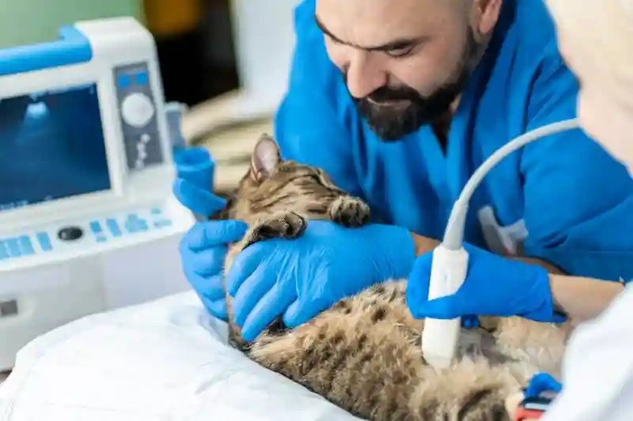

Vetenarians are docotros who preform medical help on animals such as surgery,shots,check ups and emergency check ups.its some what like doctos who do the same but in this case its animals and not people.veterinary equipment has been around for many years each year advancing more and more but there is always space to advance the technology today that veterinarys use to garente the wellness of our animals..
Veterinarys before didnt have high technology and most remedess were made homemade and didnt work as well. back then the most impresive techonology they are were x rays but even with that there were a few misfunctions